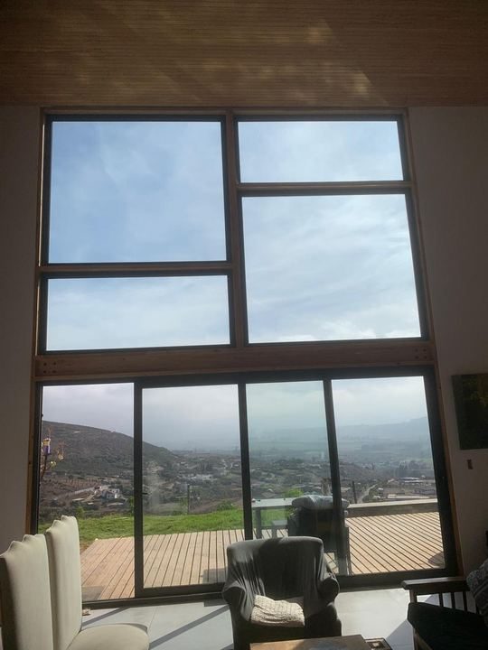
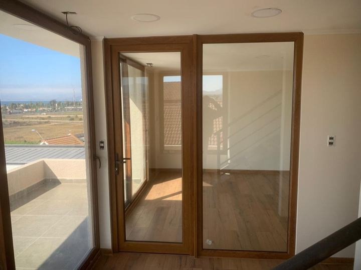
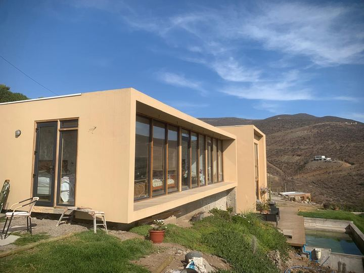
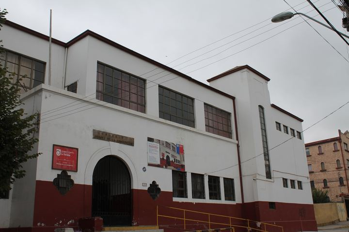

Aislación térmica
La casa pierde menos calor en invierno, gasta menos en calefacción y los vidrios se empañan mucho menos.
Un termopanel bien elegido puede aislar del frío, controlar el calor del sol, bajar el ruido y proteger ante golpes, todo en la misma ventana. Te ayudamos a escoger la combinación de vidrios adecuada para tu proyecto, en aluminio o PVC.
Un termopanel son dos vidrios separados por una cámara de aire sellada. Esa cámara seca y hermética es la que frena el paso del calor y del sonido. Cuando lleva tres vidrios y dos cámaras se llama TVH (triple vidriado hermético).
La combinación de vidrios, sus espesores, las láminas especiales y el ancho de la cámara se definen según el tamaño de la ventana, el viento al que estará expuesta y lo que se busca lograr: abrigo, control solar, silencio o seguridad.

La casa pierde menos calor en invierno, gasta menos en calefacción y los vidrios se empañan mucho menos.
Con un vidrio de control solar entra menos calor del sol en verano, sin oscurecer el ambiente ni usar vidrios espejados.
Combinando espesores distintos o un vidrio laminado acústico, baja notablemente el ruido del tránsito y la calle.
Con vidrio templado o laminado se reduce el riesgo de cortes si alguien choca con la ventana o si el vidrio se quiebra.
| Tipo de vidrio | Composición (mm) | Valor U (W/m²K) |
|---|---|---|
| Vidrio simple incoloro | 6 | 5,8 |
| Termopanel incoloro | 6 / 12 / 6 | 2,8 |
| Termopanel Low-E pirolítico | 6 / 12 / 6 | 1,8 |
| Termopanel Low-E capa blanda | 6 / 12 / 6 | 1,6 |
Un termopanel común deja pasar menos de la mitad del calor que un vidrio simple. La composición 6/12/6 significa vidrio de 6 mm, cámara de 12 mm y otro vidrio de 6 mm.
Tiene una capa invisible de baja emisividad que devuelve el calor de la calefacción hacia dentro, pero deja entrar el sol. Un termopanel Low-E conserva cerca del 66% de la energía que se perdería con un vidrio simple.
Un termopanel con control solar incorpora un vidrio especial que refleja parte de la radiación del sol. Así reduce el calor que entra en verano y, al mismo tiempo, aísla en invierno, manteniendo una buena entrada de luz y sin el efecto espejo de los vidrios reflectivos.
Su eficiencia se mide con el coeficiente de sombra: mientras más bajo, más calor bloquea. Un vidrio común está cerca de 0,94; un termopanel común, cerca de 0,82; y un termopanel con control solar puede bajar a valores entre 0,36 y 0,63.
| Configuración | Composición (mm) | Atenuación (dB) |
|---|---|---|
| Vidrio simple | 6 | 31 |
| Termopanel común | 6 / 12 / 6 | 32 |
| Termopanel con vidrios de distinto espesor | 8 / 12 / 10 | 35 |
| Termopanel con laminado acústico | 3+3 / 12 / 6 | 38 |
Un termopanel común aísla del ruido casi lo mismo que un vidrio simple. Si vives en una calle ruidosa, conviene un termopanel acústico, y que todas las ventanas del recinto tengan la misma aislación: el ruido entra por la más débil.
Es el vidrio común, el más usado en ventanas. Al romperse lo hace en trozos grandes y con filo, por eso no es un vidrio de seguridad.
Tratado con calor, es unas 5 veces más resistente que el común. Si se quiebra, se desarma en trozos pequeños, generalmente sin bordes cortantes.
Dos o más vidrios unidos por una lámina plástica (PVB). Si se rompe, los trozos quedan pegados a la lámina. Además filtra cerca del 99% de los rayos UV.
Termopanel en todas las ventanas, idealmente con vidrio Low-E para reducir aún más la pérdida de calor.
Termopanel con control solar, sobre todo en ventanas al norte y al poniente.
Termopanel acústico, con vidrios de distinto espesor o laminado acústico.
Termopanel con vidrio templado o laminado en los paños expuestos a golpes.
Estas funciones se pueden combinar en un mismo termopanel. Te asesoramos para encontrar el equilibrio entre beneficio y presupuesto.
La Ordenanza General de Urbanismo y Construcciones (OGUC, art. 4.1.10) limita la superficie de ventanas según la zona térmica y el tipo de vidrio. Con termopanel se permite una mayor superficie vidriada que con vidrio simple.
Las viviendas se califican de la A a la G según su eficiencia. Cambiar vidrios simples por termopanel es una de las formas de mejorar la calificación de una casa.
La NCh 352 fija la aislación mínima frente al ruido exterior en dormitorios y estar. No es obligatoria en general, pero algunas ordenanzas municipales o proyectos la exigen.
La serie NCh 135 define dónde usar vidrios de seguridad. Hoy es de uso voluntario, salvo que las especificaciones del proyecto lo pidan.
Perfiles delgados y paños grandes. Con termopanel mejora mucho su aislación y se reduce la condensación en los vidrios.
Ver ventanas de aluminioEl perfil aísla tanto como el vidrio, así que la ventana completa logra el mejor resultado térmico y acústico.
Ver ventanas de PVC





Sí. Termopanel es el nombre comercial y DVH (doble vidriado hermético) es el nombre técnico y normativo.
La reduce bastante, porque el vidrio interior queda más tibio. En ambientes muy húmedos sigue siendo importante ventilar a diario.
Un termopanel común aísla casi lo mismo que un vidrio simple. Para bajar el ruido de verdad se necesita un termopanel acústico, con vidrios de distinto espesor o laminado acústico.
Es la composición del termopanel en milímetros: vidrio de 6 mm, cámara de aire de 12 mm y otro vidrio de 6 mm.
Si aparece humedad entre los dos vidrios, el sello perdió hermeticidad y el termopanel debe reemplazarse. Por eso es clave que esté bien fabricado y sellado.
Depende del perfil. Muchas ventanas antiguas no tienen espacio para el espesor de un termopanel. Lo revisamos en terreno y, si no es posible, te cotizamos la ventana completa.
Cuéntanos qué buscas (abrigo, menos ruido o menos calor) y te recomendamos la combinación adecuada.
Datos técnicos: Corporación de Desarrollo Tecnológico (CDT, CChC), "¿Cómo seleccionar adecuadamente un termopanel?", Ediciones Técnicas N°3, 2018.